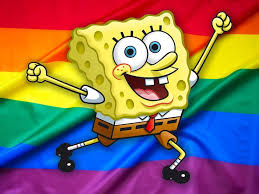

SpongeBob SquarePants is an American animated comedy television series created by marine science educator and animator Stephen Hillenburg for Nickelodeon. The series chronicles the adventures and endeavors of the title character and his aquatic friends in the fictional underwater city of Bikini Bottom. The fifth-longest-running American animated series, its popularity has made it a media franchise. It is the highest rated series to air on Nickelodeon and it is the most distributed property from ViacomCBS Networks International. The media franchise has generated more than $13 billion in merchandising revenue for Nickelodeon
SpongeBob SquarePants is an American animated comedy television series created by marine science educator and animator Stephen Hillenburg for Nickelodeon. The series chronicles the adventures and endeavors of the title character and his aquatic friends in the fictional underwater city of Bikini Bottom. The fifth-longest-running American animated series, its popularity has made it a media franchise. It is the highest rated series to air on Nickelodeon and it is the most distributed property from ViacomCBS Networks International. The media franchise has generated more than $13 billion in merchandising revenue for Nickelodeon
Living two houses away from SpongeBob is his best friend Patrick Star, a dim-witted yet friendly pink starfish who resides under a rock. Despite his mental setbacks, Patrick sees himself as intelligent.Squidward Tentacles, SpongeBob's next-door neighbor and co-worker at the Krusty Krab, is an arrogant, ill-tempered octopus who lives in an Easter Island moai. He enjoys playing the clarinet and painting self-portraits but hates his job as a cashier. He also dislikes living between SpongeBob and Patrick because of their childish nature. The owner of the Krusty Krab is a miserly red crab named Mr. Krabs who talks like a sailor and runs his restaurant as if it were a pirate ship. He is a single parent with one teenage daughter, a sperm whale named Pearl, to whom he wants to bequeath his riches. Pearl does not want to continue the family business and would rather spend her time listening to pop music or working at the local shopping mall. Another of SpongeBob's friends is Sandy Cheeks, a thrill-seeking and athletic squirrel from Texas, who wears an air-filled diving suit to breathe underwater. She lives in an oak tree entrapped in a clear glass dome locked by an airtight, hand-turned seal and is an expert in karate, as well as a scientist. Special episodes of the show are hosted by a live-action pirate named Patchy and his pet parrot Potty, whose segments are presented in a dual narrative with the animated stories. Patchy is portrayed as the president of a fictional SpongeBob fan club, and his greatest aspiration is to meet SpongeBob himself. Potty likes to make fun of Patchy's enthusiasm and causes trouble for him while he tries to host the show. An unseen figure called the French Narrator often introduces episodes and narrates the intertitles as if the series were a nature documentary about the ocean. His role and distinctive manner of speaking are references to the oceanographer Jacques Cousteau. Recurring guest characters appear throughout the series including: the retired superheroes Mermaid Man and Barnacle Boy, who are idolized by SpongeBob and Patrick; a pirate specter known as the Flying Dutchman; the muscular lifeguard of Goo Lagoon, Larry the Lobster; and the merman god of the sea, King Neptune.
While pitching the cartoon to Nickelodeon executives, Hillenburg donned a Hawaiian shirt, brought along an "underwater terrarium with models of the characters", and played Hawaiian music to set the theme. The setup was described by Nickelodeon executive Eric Coleman as "pretty amazing". They were given money and two weeks to write the pilot episode "Help Wanted". Drymon, Hillenburg, and Jennings returned with what was described by Nickelodeon official Albie Hecht as, "a performance [he] wished [he] had on tape". Although executive producer Derek Drymon described the pitch as stressful, he said it went "very well". Kevin Kay and Hecht had to step outside because they were "exhausted from laughing", which worried the cartoonists.